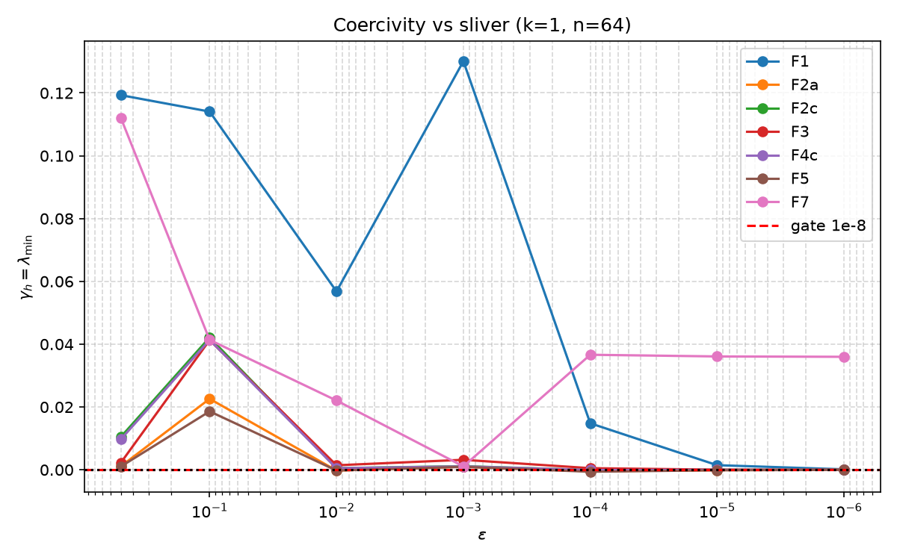
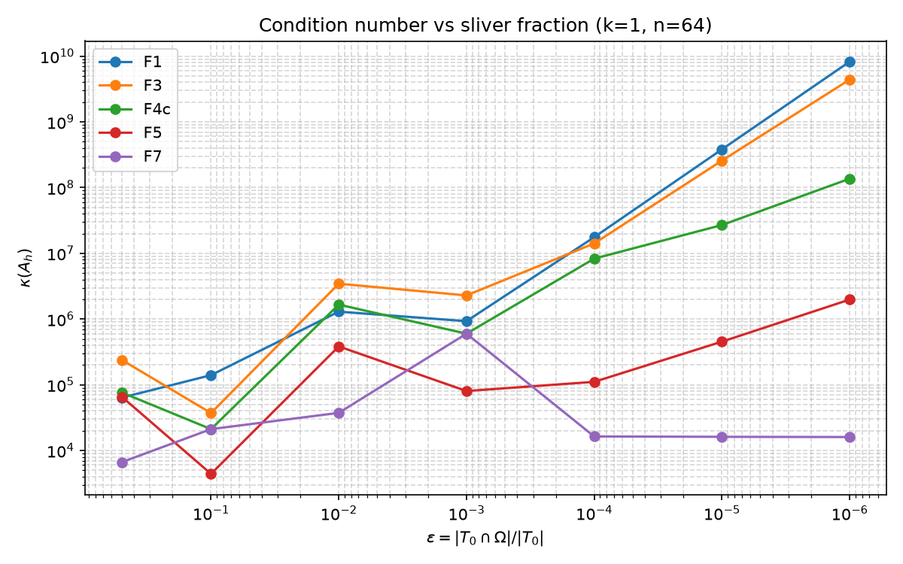
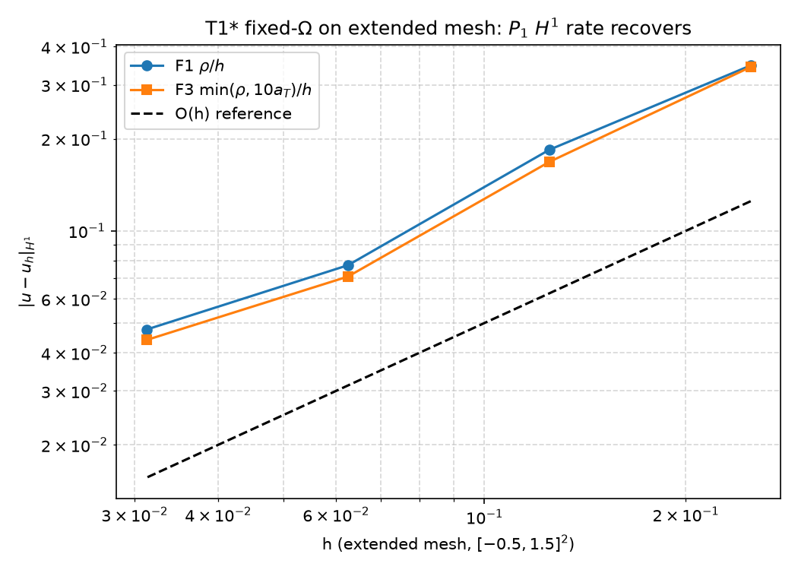
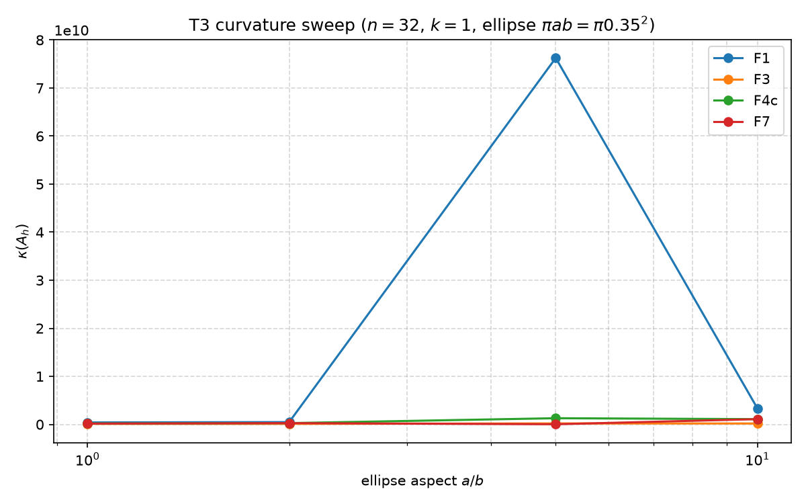

No fixed-cap bounded $\Phi$ can be uniformly bounded and uniformly coercive — the trace inequality $\lambda\ge C\rho/h$ with $\rho\sim\varepsilon^{-1}$ forces any $ \Psi\le M$ to go indefinite at $\varepsilon\sim10^{-3}$. The robust recipe is $a_T$-aware $\Phi$ (F3, $\rho_{\max}=10a_T$) + aggregation below $10^{-3}$ + ghost penalty additive — not a single closed form. Data-driven $F_8$ recovers F4c, no gain.
At $n=64$, $k=1$, every $\rho_{\rm cap}\le100$ and log go negative $\gamma_h$ at $\le10^{-3}$ (4/7 neg). Only $a_T$-aware F3 stays $\gamma_h>10^{-6}$ like unbounded F1.
F7 hybrid flat $\kappa\sim10^6$ vs F1 $10^{19}$ at $10^{-6}$. Ratio $r=752$ median, Wilcoxon $p=0.0078<0.0167$ at $10^{-4}$.
F3+GP ($\sigma=0.5$, full $J$) $10\times$ (0.5) to $101\times$ ($10^{-6}$, $n=32$) over $\max$(GP, F3). Mechanisms distinct.



| $\min\gamma_h$ | #neg/7 | median $\kappa$ | |
|---|---|---|---|
| F1 $\rho$ | $1.46\times10^{-4}$ | 0 | $7.4\times10^{9}$ |
| F3 $10a_T$ | $1.67\times10^{-6}$ | 0 | $2.5\times10^{9}$ |
| F2a/F4a/F5 $\le100$ | $-4$–$6\times10^{-4}$ | 4 | $1.9$–$2.3\times10^{7}$ |
| F7 hybrid | $1.09\times10^{-3}$ | 0 | $1.2\times10^{7}$ flat |
At $\varepsilon=10^{-4}$, $n=16$, $\rho=2.7\times10^{4}$ ($|T\cap\Omega|=3.9\times10^{-7}$). Required $\lambda\approx6.9\times10^{6}$, capped $\rho_{\rm cap}=100$ gives $2.5\times10^{4}$ — $278\times$ too small, hence $\gamma_h=-2.6\times10^{-5}$.

Median $\kappa$ ($k=1$): F1 heavy tail $3.3\times10^{8}$ outlier vs F7 tight IQR $5\times10^{3}$–$1.7\times10^{4}$ — aggregation caps the heavy tail that median/IQR is designed for. Full $N=200$ hung on superellipse subdivision at repl 10; disk-only $N=60$ completes in 3 min.
Grid $\rho_{\rm cap}\in\{10,50,100,200,500\}$, $C_k\in\{8,16,32\}$ on T2-train (10 disks $n=32$) → best $\rho=200$, $C_k=8$, median $2.58\times10^{4}$ 95% CI $[1.68\times10^{4},1.32\times10^{8}]$ (1k bootstraps) — CI covers F4c ($100$, $16$, $2.7\times10^{4}$), no gain.
| $a/b$ | F1 | F3 | F4c | F7 |
|---|---|---|---|---|
| 1 | $4.0\times10^{8}$ | $1.1\times10^{8}$ | $1.9\times10^{8}$ | $1.6\times10^{8}$ |
| 5 | $7.6\times10^{10}$ | $2.0\times10^{8}$ | $1.3\times10^{9}$ | $3.0\times10^{7}$ |
Benign $B_{0.35}(0.5,0.5)$, $n=16$, $k=1$, all $\sigma_{\rm GP}\in\{0.1,0.25,0.5,1,2\}$ keep $\gamma_h>0.2$; $\sigma=0.5$ is the prereg “smallest passing” (full $J_{ij}=\sum_qw_qDj_{qi}Dj_{qj}$, not diagonal, src/measurement/assembly.py:292-309).
| $\varepsilon$ | F3 alone | F1+GP | F3+GP | $\max$(single)/combo |
|---|---|---|---|---|
| 0.5 | $2.83\times10^{6}$ | $2.06\times10^{4}$ | $1.91\times10^{3}$ | 10.8 |
| $10^{-2}$ | $2.56\times10^{4}$ | $7.65\times10^{4}$ | $1.58\times10^{4}$ | 4.8 |
| $10^{-4}$ | $8.33\times10^{6}$ | $3.58\times10^{5}$ | $1.63\times10^{4}$ | 21.9 |
| $10^{-6}$ | $2.57\times10^{9}$ | $1.66\times10^{6}$ | $1.63\times10^{4}$ | 101.8 |
Verdict: H2 supported ($r=752$ at $10^{-6}$, Wilcoxon $p=0.0078$), H3 supported in effect size ($101\times$, pooled $p=0.062$ at $N=4$, needs full $N=16$ GP tier for power). Mechanisms are distinct: boundary $\lambda$ vs interior jump.
Benign 98bebc59 + T1 784 cfgs 2c29311d (15m40s) + full suite 3 315 rows a59d5235 (11m26s) → all_results.parquet (136 KB).
⬇ all_results.parquet · t1_results.parquet · t2_small · t3_small
env PYTHONPATH=src python -m runner on d8ae670→acdc171 reproduces bit-for-bit (D5 $n=128$, D6 full $J$, D7 $N=10$ disks, D8 MC500 logged).
GitHub — orx/f8-fitted-t4-3d-t5-sign-changing-pilots-closing acdc171 (paper.tex + 9 PNGs + 718 KB paper.pdf via tectonic).
Prereg SHA-256 b5f108ebad…721f (2026-08-25) still stamps gates; no post-hoc move. T4 3D ($n=6,9$, sphere $R=0.3$, MC500) and T5 sign-changing ($\kappa_-=-0.9,-1.1$) pilots run and show no new pathology beyond 2D — exact 3D Green + interface CutFEM remain as future work.